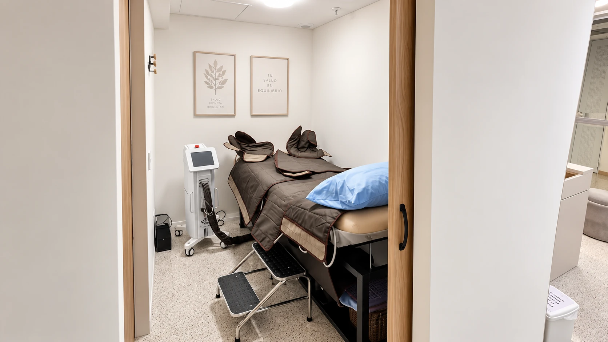

Precio del tratamiento de várices en Colombia: de qué depende
Buscas una cifra concreta y lo que encuentras son rangos tan distintos entre sí que no sirven de mucho. Aquí van los precios de referencia que publicamos y lo que hace que tu caso quede más arriba o más abajo, para que llegues a tu valoración sabiendo más o menos qué esperar.

Escribes "precio tratamiento várices Colombia" en Google y aparecen números de todos los tamaños: clínicas distintas, ciudades distintas, hasta países distintos, cada uno con su propia tabla. Es normal confundirse.
Una cifra suelta sirve de poco si no sabes a qué tratamiento corresponde. Por eso abajo van nuestros precios tratamiento por tratamiento, y después lo que mueve el valor final, que solo se confirma en la valoración.
Si alguna vez preguntaste cuánto cuesta y te respondieron "eso depende del caso", no es que te estén evadiendo: es la respuesta honesta. Pero con un rango de referencia en la mano es más fácil planear.
Precios de referencia en Seravena (noviembre de 2026)
Estos son los valores que publicamos en nuestra página de precios. El tratamiento que te toca lo define el eco doppler, así que úsalos como punto de partida, no como cotización:
| Tratamiento | Precio de referencia |
|---|---|
| Escleroterapia (arañitas) | Desde $300.000 por sesión |
| Espuma de tributarias | $1.500.000 por pierna |
| Espuma de safena | $3.000.000 por pierna |
| Endoláser, una pierna | $6.500.000 |
| Endoláser, dos piernas | $10.000.000 |
En espuma y endoláser las medias de compresión van incluidas. Primero va una valoración con el médico; con lo que encuentre, te entrega el plan por escrito con su costo exacto. Se puede pagar por partes: empiezas con un valor inicial, por lo general la mitad, y el resto lo pagas mes a mes, máximo en 3 meses. Por transferencia no hay recargo; con link de pago o datáfono hay un 5 % adicional.
Por qué el precio del tratamiento de várices en Colombia no es una tarifa única
Las várices no son todas iguales. Hay arañitas vasculares finas que apenas se notan, venas reticulares algo más gruesas y várices grandes que abultan la piel. Cada una pide un manejo distinto, y es ese manejo el que cambia el costo, no una lista de precios por clínica.
Esto es, en general, lo que más pesa a la hora de calcular un tratamiento:
- Tipo y tamaño de la várice. Una arañita superficial no exige lo mismo que una vena safena comprometida.
- Extensión del problema. No es lo mismo una zona puntual en una pierna que várices distribuidas en ambas.
- Número de sesiones. La escleroterapia, por ejemplo, casi nunca se resuelve en una sola sesión; varía según cómo responda cada paciente.
- Si incluye el eco doppler diagnóstico o si ya lo traes hecho de otro lado.
- El seguimiento posterior, porque valorar cómo evoluciona la vena también hace parte del proceso, no es un gasto aparte que se improvisa.
El eco doppler, el paso que decide todo lo demás
Antes de hablar de cuántas sesiones o qué técnica, hay una pregunta previa: ¿qué está pasando realmente con tus venas? Eso solo lo responde un eco doppler venoso, que muestra si el problema es superficial o si hay una vena más profunda que no está funcionando bien. Sin ese dato, cualquier plan de tratamiento (y cualquier precio) es una suposición.
Por eso publicamos precios de referencia, pero no damos un valor exacto por teléfono ni por WhatsApp antes de ver el eco doppler: dos pacientes con la misma queja pueden necesitar planes completamente distintos, y prometer una cifra sin conocer tu caso sería mentirte.
Particular, no EPS: qué cambia en el costo
Si tu caso entra dentro del Plan de Beneficios en Salud y tu EPS lo autoriza, una parte del proceso puede quedar cubierta por esa vía; qué tanto y en cuánto tiempo depende de cada EPS, y eso no lo podemos prometer nosotros. Seravena atiende solo de forma particular: no trabajamos con EPS ni con medicina prepagada, no necesitas remisión ni autorización previa, y agendas directo por WhatsApp. Si quieres entender mejor las dos rutas, lo explicamos a fondo en várices por EPS o particular: diferencias reales en Colombia.
En nuestro caso, el eco doppler se hace el mismo día, en el mismo consultorio de El Poblado, sin mandarte a otra sede solo para la ecografía. Eso simplifica el proceso, aunque no cambia la regla de fondo: la tabla de arriba es el punto de partida y el precio final sale de lo que encontremos.
Qué tratamientos existen (y por qué el precio varía entre ellos)
Según la guía que encuentres, verás mencionadas la escleroterapia, el láser o, en casos más avanzados, la cirugía. No todas sirven para lo mismo ni cuestan lo mismo, porque no todas resuelven el mismo tipo de vena. La escleroterapia suele ser la opción para arañitas y várices pequeñas; en nuestra guía de opciones para tratar las várices explicamos las opciones una por una, con sus pros y sus límites, para que entiendas de qué está hablando tu médico antes de que te hable de números.
Hay algo que sí podemos decir con honestidad: el tratamiento más barato no siempre es el más adecuado para tu caso, y el más caro tampoco garantiza mejores resultados por sí solo. Lo que determina si vale la pena es si responde a lo que muestra tu eco doppler.
Entonces, ¿qué hacer con esto mañana? Deja de comparar cifras sueltas en internet esta noche. En su lugar, escribe pidiendo cita para una valoración de tratamiento de várices en Medellín con eco doppler incluido: es el único paso que convierte un rango genérico en un plan real para tu caso. Puedes agendar tu valoración cuando quieras.
Preguntas frecuentes
¿Cuánto cuesta tratar las várices en Seravena?
Depende de lo que muestre el eco doppler. Como referencia: escleroterapia desde $300.000 por sesión, espuma desde $1.500.000 por pierna y endoláser desde $6.500.000 una pierna. En espuma y endoláser las medias de compresión van incluidas. El valor exacto te lo entregamos por escrito después de la valoración.
¿El eco doppler tiene costo aparte del tratamiento?
Sí, es un estudio propio que se cobra de forma independiente, porque es el que permite definir el plan de tratamiento. En Seravena se hace en el mismo consultorio de El Poblado, en Medellín, así que no necesitas otra cita en otra sede.
Si mi EPS no cubre el tratamiento, ¿cuánto me tocaría pagar por mi cuenta?
No podemos decirte qué cubre tu EPS: cada aseguradora define sus propias coberturas y procesos. Seravena atiende solo de forma particular, sin EPS ni prepagada. Como referencia, la escleroterapia empieza en $300.000 por sesión y el endoláser de una pierna está en $6.500.000; el valor exacto de tu plan sale de la valoración.
¿Entre más várices tenga, el tratamiento siempre sale más caro?
En general sí influye, porque más venas afectadas suelen requerir más sesiones o más producto en cada una. Pero también pesa el tipo de vena: unas arañitas pequeñas en varias zonas pueden tratarse distinto a una várice gruesa en una sola pierna, así que el número no lo es todo.